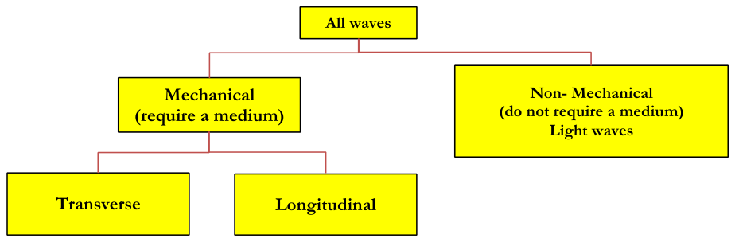
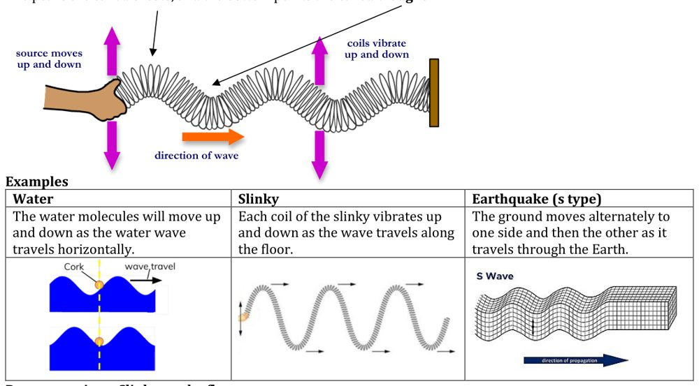
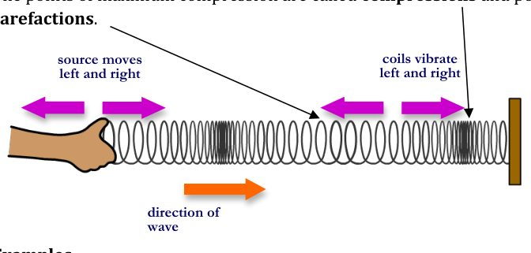
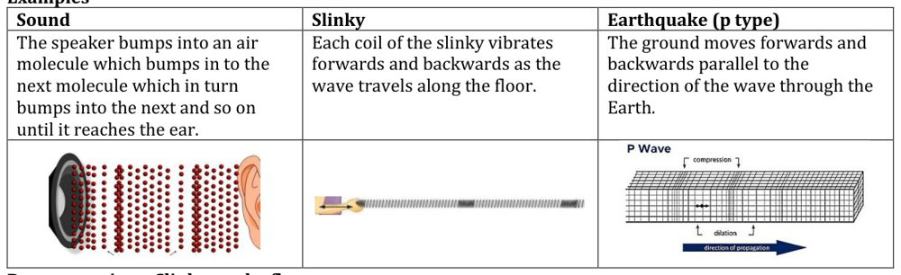
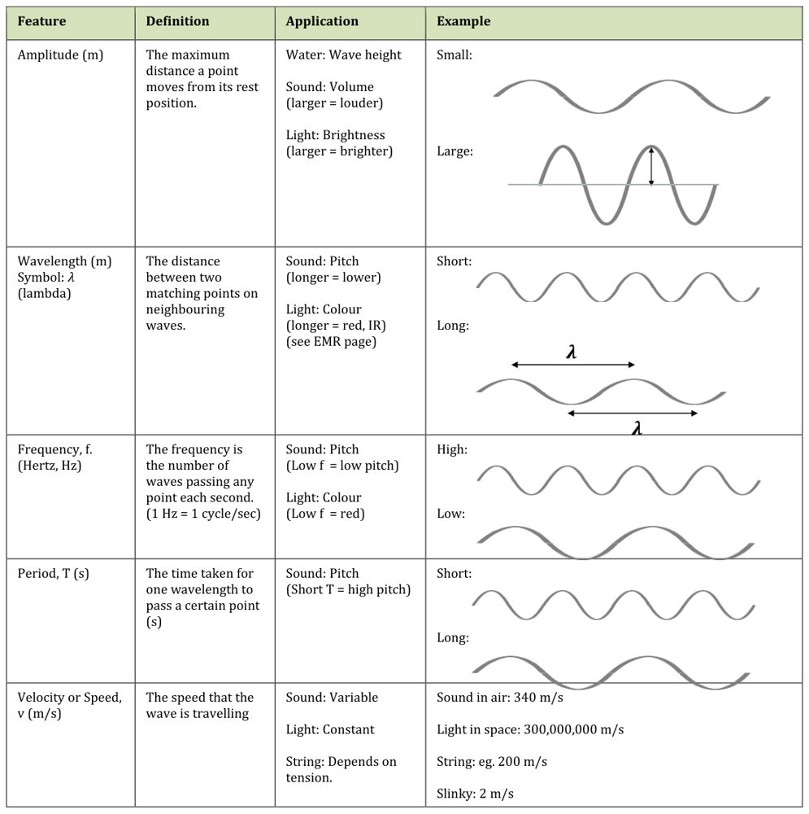
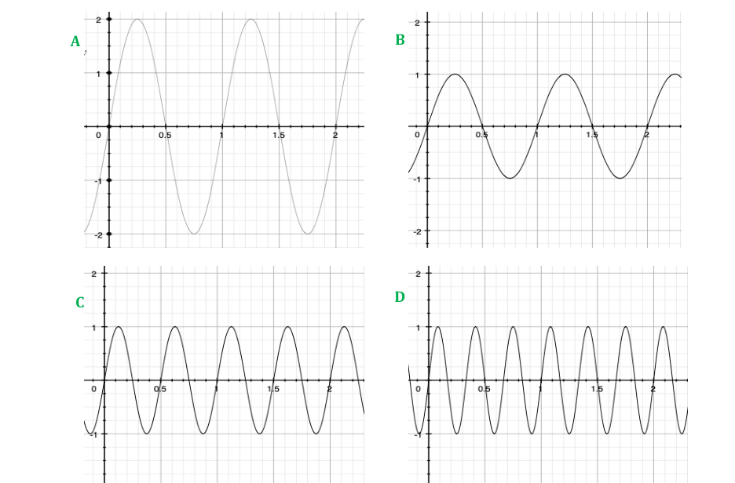
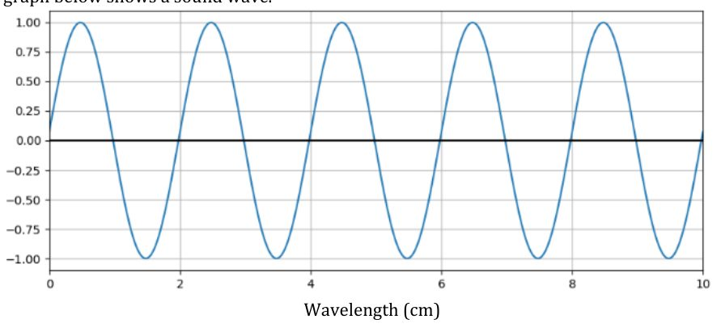

1.1 Types of waves
Wave motion transfers energy from one point to another, often with no transfer of the material of the medium. Instead, the material oscillates (vibrates) around fixed positions.
There are many types of waves. In this unit we focus on these categories:

Many possible answers, e.g. sound, light, waves on a string, slinky waves, water waves, earthquake (seismic) waves. Specific types of light: radio, microwave, infrared, visible, ultraviolet, X-ray and gamma ray.
Transverse waves
There is no net transfer of matter, but energy is transferred in the direction of the wave. In a transverse slinky wave, the coils move up and down with the source (the hand) while the wave travels along the slinky. The peaks are called crests and the low points are called troughs.

| Water | Slinky | Earthquake (S type) |
|---|---|---|
| The water molecules move up and down as the water wave travels horizontally. | Each coil vibrates up and down as the wave travels along the floor. | The ground moves from side to side as the wave travels through the Earth. |
Demonstration: slinky on the floor
Your teacher oscillates a slinky from side to side along the floor. In what direction does the wave move relative to the source?
Away from the hand that is oscillating it.
Focusing on one coil, in what direction does it move relative to the direction of the wave? How does this relate to the net movement of particles?
An individual coil moves at right angles to the direction of the wave. There is no net movement of the coils: they vibrate about a fixed position, so there aren't more coils at the end than before.
What happens to the wave when it reaches the end of the slinky, where it is being held?
It reflects (bounces back along the slinky).
What does the person holding the far end feel as the wave reaches their hand? How does this relate to energy transfer?
The slinky moves their hand. Energy has been transferred along the slinky to the hand, in the direction of the wave's motion.
Longitudinal waves
Again, there is no net transfer of matter, but energy is transferred in the direction of the wave. In a longitudinal slinky wave, the coils move backwards and forwards with the source. The points where the coils are squashed together are compressions, and where they are spread apart are rarefactions.


| Sound | Slinky | Earthquake (P type) |
|---|---|---|
| The speaker bumps into an air molecule, which bumps into the next, and so on until the vibration reaches the ear. | Each coil vibrates forwards and backwards as the wave travels along the floor. | The ground moves forwards and backwards, parallel to the direction of the wave. |
For a longitudinal wave on a slinky: in what direction does one coil move relative to the wave? What happens at the end of the slinky? What does the person at the other end feel?
The wave moves away from the source. Each coil moves parallel to (in the same direction as) the wave, but there is no net movement of coils. At the end, the wave reflects. The person feels the slinky push and pull their hand, because energy has been transferred along the slinky in the direction of the wave.
Wave features: describing waves
When analysing and describing waves (longitudinal or transverse), several common terms are used for consistency and clarity.
| Feature | Definition | Application | Example |
|---|---|---|---|
| Amplitude (m) | The maximum distance a point moves from its rest position | Water: wave height. Sound: volume (larger = louder). Light: brightness (larger = brighter). | Small or large waves |
| Wavelength, λ (lambda) (m) | The distance between two matching points on neighbouring waves | Sound: pitch (longer = lower). Light: colour (longer = red, infrared). | Short or long waves |
| Frequency, f (hertz, Hz) | The number of waves passing any point each second (1 Hz = 1 cycle per second) | Sound: pitch (low f = low pitch). Light: colour (low f = red). | High or low |
| Period, T (s) | The time taken for one wavelength to pass a certain point | Sound: pitch (short T = high pitch). | Short or long |
| Velocity (speed), v (m/s) | The speed the wave travels | Sound: variable. Light: constant. String: depends on tension. | Sound in air: 340 m/s. Light in space: 300 000 000 m/s. String: e.g. 200 m/s. Slinky: 2 m/s. |

The period (T, in seconds) and frequency (f, in hertz) are inversely related:
Questions

- Amplitude of A: units
- Amplitude of C: units
- Wavelength of B: units
- Wavelength of D: units
- If A and B are sound plots, which would be louder?
- If C and D are sound plots, which would be higher pitch?
- If B and C are "light" plots, which has the higher frequency?
D fits 3 waves in each unit, so its wavelength is 1/3 ≈ 0.33 units. Larger amplitude means louder; more waves per unit (shorter wavelength) means higher frequency and higher pitch.
The wave equation
For any wave, the wave speed (v, in m/s) can be calculated from the frequency (f, in Hz) and wavelength (λ, in m):
Section 1.1: Key summary questions
State which type of waves require a medium and which don't. Give an example of each.
Mechanical waves require a medium, e.g. water waves or sound. Non-mechanical (electromagnetic) waves don't require a medium, e.g. light.
State and explain a similarity between transverse and longitudinal waves.
Any one of: both have no net transfer of matter (there is no extra matter at the end of the wave); both transfer energy along the wave in the direction of motion; both reflect when they hit a boundary.
State and explain a difference between transverse and longitudinal waves.
The motion of the particles. In a transverse wave, particles move perpendicular (at right angles) to the wave direction. In a longitudinal wave, particles move parallel to the direction of the wave.

The graph shows a sound wave. State the wavelength of the wave in metres.
One full wave is 2 cm long. 2 cm = 0.020 m.
If the speed of sound in air is 340 m/s, calculate the frequency of the wave.
f = v ÷ λ = 340 ÷ 0.020 = 17 000 Hz.
A water wave has a wavelength of 3.0 m and a frequency of 0.47 Hz. Calculate the speed of the wave.
v = f × λ = 0.47 × 3.0 = 1.4 m/s.
A sound wave in water has a speed of 1500 m/s and a wavelength of 0.75 m. Calculate the frequency of the sound.
f = v ÷ λ = 1500 ÷ 0.75 = 2000 Hz.
A light wave has a speed of 3.0 × 108 m/s and a frequency of 7.5 × 1014 Hz. Calculate its wavelength. (You can type answers like 4e-7.)
λ = v ÷ f = (3.0 × 108) ÷ (7.5 × 1014) = 4.0 × 10−7 m (400 nm, violet light).